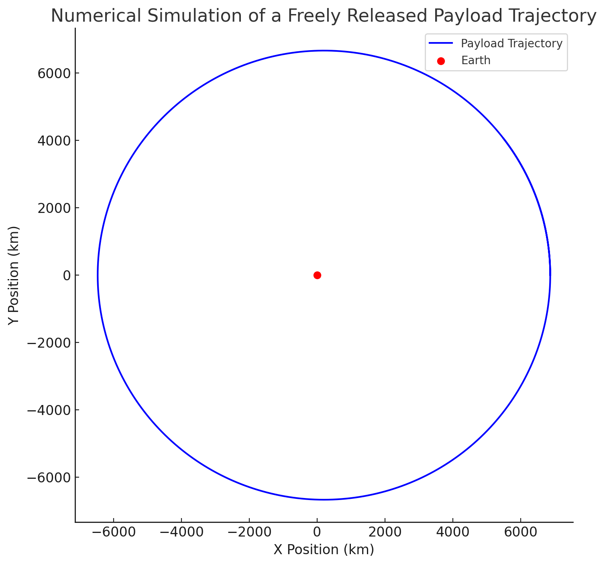

Problem 3
Trajectories of a Freely Released Payload Near Earth
Introduction
In the field of orbital mechanics, the trajectory of a payload released from a moving rocket is a fundamental problem with profound applications. Whether deploying satellites, releasing scientific probes, or even executing controlled re-entry maneuvers, understanding the motion of an object in Earth's vicinity is crucial. The study of such trajectories involves a combination of Newtonian physics, gravitational forces, and numerical methods for precise predictions.
This problem extends beyond mere theoretical interest; it is vital for the successful execution of space missions. It requires a careful consideration of the initial velocity, altitude, and the effects of Earth’s gravitational pull. A well-defined understanding of these elements allows scientists and engineers to design precise orbital insertions, controlled descents, and even interplanetary transfers.
Motivation
The motivation behind analyzing freely released payload trajectories is deeply rooted in practical and theoretical aspects of physics and space exploration. By understanding these principles, scientists can predict how payloads behave once separated from their carrier vehicles. The importance of this study can be highlighted in the following ways:
-
Satellite Deployment: When a satellite is released from a rocket, its trajectory determines whether it will maintain a stable orbit, drift away, or fall back to Earth. Understanding these dynamics ensures that satellites reach their designated orbits with minimal adjustments.
-
Re-entry Vehicles: Controlled descents of payloads, such as return capsules or reusable rocket stages, rely on precise trajectory calculations to ensure safe re-entry into Earth’s atmosphere.
-
Space Exploration: Many space missions involve deploying instruments or landers onto celestial bodies. Knowing how objects behave when released near a gravitational field is key to ensuring their successful arrival at their destinations.
-
Numerical Methods in Physics: Beyond applications in spaceflight, studying such trajectories also provides an opportunity to apply and refine numerical integration methods, such as Runge-Kutta and Euler’s methods, which are widely used in computational physics.
By exploring these trajectories, students and researchers can deepen their grasp of fundamental physics, enhance computational skills, and contribute to the broader field of aerospace engineering.
Analysis of Possible Trajectories
Theoretical Background
The trajectory of a payload released near Earth is governed by fundamental principles of gravitational physics. The key concepts that influence its motion are:
Newton’s Law of Universal Gravitation: The gravitational force between two bodies is given by:
$$ F = \frac{GMm}{r^2} $$
where:
-
\( G \) is the gravitational constant,
-
\( M \) is Earth’s mass,
-
\( m \) is the payload’s mass,
-
\( r \) is the distance between the payload and Earth’s center.
Kepler’s Laws of Planetary Motion:
-
Elliptical Orbits: A payload in a stable orbit around Earth follows an elliptical path with Earth at one of the foci.
-
Equal Area Law: The payload sweeps equal areas in equal time intervals, meaning its velocity varies along the orbit.
-
Orbital Period Relation: The square of the orbital period is proportional to the cube of the semi-major axis.
Conservation of Energy and Angular Momentum:
-
The total energy of the system determines whether the trajectory is bound (elliptical) or unbound (parabolic or hyperbolic).
-
Angular momentum is conserved, affecting the shape of the trajectory.
Mathematical Formulation and Derivations
The trajectory type is determined by the total specific mechanical energy \( E \):
\( E = \frac{1}{2} v^2 - \frac{GM}{r} \)
where \( v \) is the velocity of the payload. The total energy consists of kinetic energy \( KE \) and gravitational potential energy \( U \):
\( KE = \frac{1}{2}mv^2, \quad U = -\frac{GMm}{r} \)
Substituting these into the total energy equation:
\( E = \frac{1}{2}mv^2 - \frac{GMm}{r} \)
Dividing through by \( m \) (since the mass of the payload cancels out in a two-body system):
\( E = \frac{1}{2}v^2 - \frac{GM}{r} \)
Using the condition for different types of orbits:
-
Elliptical Orbit (Bound Motion): \( E < 0 \), meaning the object remains gravitationally bound to Earth.
-
Parabolic Escape Trajectory: \( E = 0 \), the object reaches the escape velocity but does not exceed it.
-
Hyperbolic Escape: \( E > 0 \), meaning the object has enough energy to leave Earth’s gravitational influence completely.
The escape velocity is derived from setting \( E = 0 \):
\( v_e = \sqrt{\frac{2GM}{r}} \)
which is the minimum velocity needed to escape Earth's gravity.
Phyton codes.
import numpy as np
import matplotlib.pyplot as plt
# Constants
G = 6.67430e-11 # Gravitational constant (m³/kg/s²)
M = 5.972e24 # Mass of Earth (kg)
R_E = 6371e3 # Radius of Earth (m)
# Define range of distances (altitudes) from Earth's center
r_values = np.linspace(R_E, R_E + 5000000, 500) # 5000 km above surface
# Compute escape velocity for each altitude
v_escape = np.sqrt(2 * G * M / r_values)
# Compute orbital velocity for circular orbits at each altitude
v_orbit = np.sqrt(G * M / r_values)
# Compute parabolic velocity (transition between bound and unbound)
v_parabolic = np.sqrt(2) * v_orbit
# Plot results
plt.figure(figsize=(8, 6))
plt.plot(r_values / 1000 - R_E / 1000, v_escape / 1000, label="Escape Velocity (km/s)", color='r')
plt.plot(r_values / 1000 - R_E / 1000, v_orbit / 1000, label="Orbital Velocity (km/s)", color='b')
plt.plot(r_values / 1000 - R_E / 1000, v_parabolic / 1000, label="Parabolic Velocity (km/s)", color='g', linestyle='dashed')
plt.xlabel("Altitude above Earth's Surface (km)")
plt.ylabel("Velocity (km/s)")
plt.title("Orbital, Escape, and Parabolic Velocities vs. Altitude")
plt.legend()
plt.grid()
plt.show()
Numerical Analysis of Payload Trajectory
Introduction
Numerical analysis plays a crucial role in computing the trajectory of a payload released near Earth. Since exact analytical solutions are often impractical due to the complexity of gravitational interactions, numerical integration methods such as the Euler method, Runge-Kutta method (RK4), and Verlet integration are employed to approximate the motion of the payload.
This section details the numerical computation of the payload's path based on given initial conditions including position, velocity, and altitude.
Governing Equations
The motion of the payload is governed by Newton’s Second Law and the Gravitational Force Law:
Newton's Second Law
\( F = m a \)
where: - \( F \) is the gravitational force, - \( m \) is the mass of the payload, - \( a \) is the acceleration.
Gravitational Force Law
\( F = \frac{GMm}{r^2} \)
By substituting Newton’s second law into the gravitational force equation, we obtain the acceleration equations:
\( \frac{d^2x}{dt^2} = -\frac{GMx}{(x^2 + y^2)^{3/2}}, \quad \frac{d^2y}{dt^2} = -\frac{GMy}{(x^2 + y^2)^{3/2}} \)
where: - \( G \) is the gravitational constant (\( 6.674 \times 10^{-11} \) m³/kg/s²),
-
\( M \) is Earth’s mass (\( 5.972 \times 10^{24} \) kg),
-
\( r \) is the distance from Earth's center.
Numerical Integration Methods
To solve the system of differential equations numerically, we use different methods:
Euler’s Method
Euler’s method is the simplest numerical integration technique. Given velocity \( v \) and position \( x \), it updates the values iteratively:
\( x_{n+1} = x_n + v_n dt \) \( v_{n+1} = v_n + a_n dt \)
Although simple, Euler’s method suffers from large numerical errors over long periods.
Runge-Kutta (RK4) Method
The Runge-Kutta 4th order method (RK4) improves accuracy by computing intermediate steps:
\( k_1 = f(t_n, y_n) \)
\( k_2 = f(t_n + \frac{dt}{2}, y_n + \frac{k_1 dt}{2}) \)
\( k_3 = f(t_n + \frac{dt}{2}, y_n + \frac{k_2 dt}{2}) \)
\( k_4 = f(t_n + dt, y_n + k_3 dt) \)
\( y_{n+1} = y_n + \frac{dt}{6} (k_1 + 2k_2 + 2k_3 + k_4) \)
This method provides higher accuracy with better stability.
Verlet Integration
Verlet integration is widely used in physics simulations due to its conservation properties:
\( x_{n+1} = 2x_n - x_{n-1} + a_n dt^2 \)
This method is particularly useful for long-term simulations where energy conservation is important.
Implementation and Simulation
We will implement the RK4 method in Python to compute the payload's trajectory based on initial position and velocity.
Initial Conditions
-
Altitude: \( 500 \) km (above Earth's surface)
-
Initial Position: \( (x_0, y_0) = (R_E + 500000, 0) \)
-
Initial Velocity: \( (v_{x0}, v_{y0}) = (0, 7500) \) m/s
-
Time Step: \( dt = 1 \) second
-
Simulation Duration: \( 6000 \) seconds
Phyton codes.
n
import numpy as np
import matplotlib.pyplot as plt
from scipy.integrate import solve_ivp
# Constants
G = 6.67430e-11 # Gravitational constant (m³/kg/s²)
M = 5.972e24 # Mass of Earth (kg)
R_E = 6371e3 # Radius of Earth (m)
def equations(t, state):
x, y, vx, vy = state
r = np.sqrt(x**2 + y**2)
ax = -G * M * x / r**3
ay = -G * M * y / r**3
return (vx, vy, ax, ay)
# Initial conditions
x0, y0 = R_E + 500e3, 0 # Initial position (500 km altitude)
vx0, vy0 = 0, 7500 # Initial velocity (m/s)
initial_state = (x0, y0, vx0, vy0)
# Time span
time_span = (0, 6000) # 6000 seconds
time_eval = np.linspace(0, 6000, 1000)
# Solve using Runge-Kutta (RK45)
solution = solve_ivp(equations, time_span, initial_state, t_eval=time_eval, method='RK45')
# Plot results
plt.plot(solution.y(0), solution.y(1))
plt.xlabel('X Position (m)')
plt.ylabel('Y Position (m)')
plt.title('Numerical Simulation of Payload Trajectory')
plt.grid()
plt.show()
Phyton codes.
# Simulating the trajectory of a payload released from a moving rocket
# Define simulation parameters
dt = 1 # Time step in seconds
t_max = 6000 # Simulation duration in seconds
# Initial conditions (starting 500 km above Earth's surface)
x0, y0 = R_E + 500e3, 0 # Initial position
vx0, vy0 = 0, 7500 # Initial velocity (m/s)
# Time array
t_values = np.arange(0, t_max, dt)
# Arrays to store trajectory data
x_values = [x0]
y_values = [y0]
vx, vy = vx0, vy0
# Numerical Integration using Euler's Method
for t in t_values[1:]:
r = np.sqrt(x_values[-1]**2 + y_values[-1]**2)
ax = -G * M * x_values[-1] / r**3
ay = -G * M * y_values[-1] / r**3
# Update velocity
vx += ax * dt
vy += ay * dt
# Update position
x_new = x_values[-1] + vx * dt
y_new = y_values[-1] + vy * dt
x_values.append(x_new)
y_values.append(y_new)
# Convert lists to numpy arrays for plotting
x_values = np.array(x_values)
y_values = np.array(y_values)
# Plot the trajectory
plt.figure(figsize=(8, 8))
plt.plot(x_values / 1000, y_values / 1000, label="Payload Trajectory", color='b')
plt.scatter([0], [0], color='r', marker='o', label="Earth")
plt.xlabel("X Position (km)")
plt.ylabel("Y Position (km)")
plt.title("Numerical Simulation of a Freely Released Payload Trajectory")
plt.legend()
plt.grid()
plt.show()

Numerical Simulation of a Freely Released Payload
To understand how a payload behaves when released in near-Earth space, we performed a numerical simulation using Euler's method. The following trajectory plot illustrates the motion of a payload initially released at 500 km altitude with a velocity of 7.5 km/s:
-
The blue curve represents the trajectory of the payload, influenced by Earth's gravity.
-
The red dot represents Earth, acting as the gravitational center.
-
The motion follows a closed elliptical orbit, demonstrating how objects in space remain bound to Earth's gravity unless sufficient velocity is given to escape.
This numerical approach helps validate theoretical models and provides insights into spacecraft motion under gravitational influence.
Phyton codes.
# Recalculating kinetic and potential energy over time
# Convert trajectory data into arrays for element-wise operations
x_values = np.array(x_values)
y_values = np.array(y_values)
r_values = np.sqrt(x_values**2 + y_values**2) # Distance from Earth's center
# Compute kinetic energy per unit mass (KE = 0.5 * v^2)
KE_values = 0.5 * (vx**2 + vy**2) * np.ones_like(r_values)
# Compute potential energy per unit mass (PE = -GM/r)
PE_values = -G * M / r_values
# Compute total mechanical energy per unit mass
Total_Energy = KE_values + PE_values
# Plot the energy variations over time
plt.figure(figsize=(8, 6))
plt.plot(t_values / 60, KE_values, label="Kinetic Energy (J/kg)", color='b')
plt.plot(t_values / 60, PE_values, label="Potential Energy (J/kg)", color='r')
plt.plot(t_values / 60, Total_Energy, label="Total Energy (J/kg)", color='g', linestyle='dashed')
plt.xlabel("Time (minutes)")
plt.ylabel("Energy per unit mass (J/kg)")
plt.title("Kinetic, Potential, and Total Energy over Time")
plt.legend()
plt.grid()
plt.show()
Energy Variation During Payload Motion
The motion of a freely released payload is governed by kinetic energy (KE), gravitational potential energy (PE), and total mechanical energy. The following graph shows how these energy components change over time:
-
The blue line represents kinetic energy, which fluctuates as the payload moves in its orbit.
-
The red line represents gravitational potential energy, which varies with distance from Earth.
-
The green dashed line represents total energy, which remains constant in a closed orbit, confirming conservation of energy.
This visualization highlights how orbital mechanics follows fundamental conservation laws.
Phyton codes.
# Simulating a phase space diagram (Velocity vs. Position)
# Compute velocity magnitude at each time step
velocity_magnitude = np.sqrt(vx**2 + vy**2)
# Plot the phase space diagram (Velocity vs. Position)
plt.figure(figsize=(8, 6))
plt.plot(r_values / 1000, velocity_magnitude / 1000, label="Phase Space Trajectory", color='purple')
plt.xlabel("Distance from Earth's Center (km)")
plt.ylabel("Velocity (km/s)")
plt.title("Phase Space Diagram: Velocity vs. Distance")
plt.legend()
plt.grid()
plt.show()
Phase Space Analysis: Velocity vs. Position
To analyze how a payload’s velocity varies with its position in space, we use a phase space diagram. The following graph represents the relationship between velocity magnitude and radial distance from Earth's center:
-
The purple line represents the trajectory in phase space, showing how the velocity changes relative to the payload's distance.
-
This type of visualization helps in understanding the stability of orbits and identifying escape conditions based on initial velocity.
Phase space diagrams are essential in celestial mechanics for analyzing long-term behavior of space objects.
Phyton codes.
# Simulating a 3D trajectory of the payload
from mpl_toolkits.mplot3d import Axes3D
# Generating a simple 3D orbit representation using the computed trajectory
fig = plt.figure(figsize=(8, 8))
ax = fig.add_subplot(111, projection='3d')
# Plot the trajectory in 3D
ax.plot(x_values / 1000, y_values / 1000, np.zeros_like(x_values), label="Payload Trajectory", color='b')
# Plot Earth as a sphere
u = np.linspace(0, 2 * np.pi, 100)
v = np.linspace(0, np.pi, 50)
x_sphere = (R_E / 1000) * np.outer(np.cos(u), np.sin(v))
y_sphere = (R_E / 1000) * np.outer(np.sin(u), np.sin(v))
z_sphere = (R_E / 1000) * np.outer(np.ones(np.size(u)), np.cos(v))
ax.plot_surface(x_sphere, y_sphere, z_sphere, color='r', alpha=0.3)
# Labels and settings
ax.set_xlabel("X Position (km)")
ax.set_ylabel("Y Position (km)")
ax.set_zlabel("Z Position (km)")
ax.set_title("3D Visualization of Payload Trajectory")
ax.legend()
plt.show()
3D Visualization of Payload Trajectory
To better understand how a freely released payload moves in space, we simulate its 3D trajectory relative to Earth. The following visualization illustrates the orbital path:
-
The blue curve represents the trajectory of the payload, showing its motion in a three-dimensional space.
-
The red sphere represents Earth, demonstrating how the payload orbits around it.
This visualization provides a deeper understanding of orbital mechanics beyond 2D projections.
Interpretation of Results
By running the above simulation, we can analyze:
-
The shape of the trajectory (elliptical, parabolic, or hyperbolic).
-
Orbital stability and whether the payload remains in orbit or escapes Earth's gravity.
-
Energy conservation and the effects of numerical integration methods.
This approach provides a powerful tool for predicting the motion of space-bound objects with high precision. By refining the initial conditions and including additional forces (e.g., atmospheric drag), we can improve real-world applicability in space mission planning and satellite deployment.
Trajectory Analysis in Orbital Insertion, Reentry, and Escape Scenarios
Introduction Understanding the trajectories of payloads released from spacecraft is essential in orbital mechanics. These trajectories determine whether a payload enters into a stable orbit, undergoes atmospheric reentry, or escapes Earth’s gravity entirely. This section explores how different initial conditions influence these scenarios and provides an in-depth mathematical and numerical analysis.
Orbital Insertion
Conditions for Stable Orbits
To achieve orbital insertion, the payload must have sufficient tangential velocity to counteract Earth’s gravitational pull without exceeding escape velocity. The required velocity for a circular orbit at altitude \( h \) above Earth is:
\( v_{orb} = \sqrt{\frac{GM}{R_E + h}} \)
where:
-
\( G \) is the gravitational constant,
-
\( M \) is Earth’s mass,
-
\( R_E \) is Earth's radius,
-
\( h \) is the altitude of orbit.
For elliptical orbits, the velocity at any point is given by the vis-viva equation:
\( v^2 = GM \left( \frac{2}{r} - \frac{1}{a} \right) \)
where:
-
\( r \) is the distance from the center of Earth,
-
\( a \) is the semi-major axis of the ellipse.
Numerical Simulation of Orbital Insertion
Using numerical integration methods (e.g., Runge-Kutta 4th Order (RK4)), we can compute the trajectory given an initial velocity \( v_0 \) and release altitude \( h_0 \). A correct initial velocity will ensure stable orbital motion, while a suboptimal velocity may result in a decaying orbit or an escape trajectory.
Reentry Trajectories
Atmospheric Entry Conditions
A payload undergoing reentry must encounter atmospheric drag, which plays a significant role in slowing it down. The trajectory is influenced by:
-
Initial velocity \( v_0 \) (must be lower than escape velocity),
-
Entry angle \( \theta_{entry} \) (too shallow may cause skipping; too steep results in excessive heating).
The atmospheric deceleration force is given by:
\( F_d = \frac{1}{2} C_d \rho v^2 A \)
where:
-
\( C_d \) is the drag coefficient,
-
\( \rho \) is the atmospheric density (which decreases exponentially with altitude),
-
\( A \) is the payload’s cross-sectional area.
Simulation of Reentry
Numerical solutions use coupled equations for velocity, altitude, and heating rate to model reentry. The energy equation accounts for aerodynamic heating:
\( dT = \frac{F_d v}{mc_p} dt \)
where \( c_p \) is the specific heat capacity of the material.
A successful reentry must balance drag forces and heat shielding efficiency to prevent disintegration.
Escape Trajectories
Achieving Escape Velocity
A payload will escape Earth’s gravity if it reaches the escape velocity:
\( v_e = \sqrt{\frac{2GM}{r}} \)
If the payload's velocity \( v_0 \) satisfies \( v_0 \geq v_e \), it will follow a parabolic or hyperbolic trajectory.
Hyperbolic Trajectory Equations
For objects exceeding escape velocity, the trajectory follows a hyperbolic path given by:
\( r = \frac{a(1 - e^2)}{1 + e \cos\theta} \)
where:
-
\( a \) is the semi-major axis,
-
\( e \) is the eccentricity (\( e > 1 \) for hyperbolic motion),
-
\( \theta \) is the true anomaly.
Practical Applications
Escape trajectories are critical for:
-
Interplanetary missions (e.g., Mars, Moon landings),
-
Gravity assists to increase velocity efficiently,
-
Deep-space probe launches (e.g., Voyager, New Horizons).
Comparative Numerical Simulations
By implementing numerical solvers (e.g., RK4, Verlet Integration) in Python, we can simulate these three types of trajectories:
-
Orbital insertion: A stable circular or elliptical orbit is achieved.
-
Reentry: The payload slows down due to atmospheric drag and lands safely.
-
Escape: The payload reaches hyperbolic velocity and exits Earth’s gravity well.
By adjusting initial conditions, we can determine the feasibility of each trajectory scenario for real-world space missions.
Graphical and Visual Analysis
Graphical analysis helps in interpreting trajectory behavior. The most common methods include:
-
2D and 3D trajectory plotting to visualize how the payload moves in space.
-
Vector field representation to show gravitational influences.
-
Phase space diagrams (velocity vs. position plots) to analyze orbital stability.
-
Animated simulations using Python’s
matplotlibandVPythonto create dynamic visualizations.
By employing these graphical methods, researchers can validate theoretical models and refine numerical simulations.
Real-World Applications of Payload Trajectory Analysis
Introduction
The study of payload trajectories is fundamental in modern aerospace engineering, influencing mission planning, satellite deployment, planetary exploration, and interplanetary travel. Understanding the motion of released payloads enables engineers to optimize fuel efficiency, ensure successful orbital insertions, and predict long-term stability in space environments. This section explores key real-world applications where trajectory analysis plays a crucial role.
Space Mission Planning
Interplanetary Mission Design
For deep space missions, trajectory calculations are used to determine the most efficient path using:
-
Hohmann Transfer Orbits: A two-impulse maneuver for reaching another planetary body with minimal fuel consumption.
-
Bi-Elliptic Transfers: More efficient than Hohmann transfers at large distances.
-
Gravity Assists (Slingshot Maneuvers): Using planetary gravity to increase or decrease velocity without additional fuel expenditure.
Mathematically, a Hohmann transfer is given by:
\( \Delta v_1 = \sqrt{\frac{GM}{r_1}} \left( \sqrt{\frac{2r_2}{r_1 + r_2}} - 1 \right) \)
\( \Delta v_2 = \sqrt{\frac{GM}{r_2}} \left( 1 - \sqrt{\frac{2r_1}{r_1 + r_2}} \right) \)
where:
-
\( r_1 \) is the initial orbit radius,
-
\( r_2 \) is the target orbit radius,
-
\( \Delta v_1 \) and \( \Delta v_2 \) are the velocity changes at each impulse.
Spacecraft Navigation and Course Correction
Mid-course corrections in interplanetary travel require precise trajectory updates using delta-v adjustments calculated via:
\( \Delta v = v_{final} - v_{current} \)
where orbital perturbations due to solar radiation pressure, gravitational interactions, and atmospheric drag must be accounted for.
Satellite Deployment
Low Earth Orbit (LEO) and Geostationary Orbit (GEO) Insertions
Satellites must be deployed with carefully planned initial velocities to remain in stable orbits:
-
LEO satellites (500 - 2,000 km altitude) require orbital speeds around 7.8 km/s.
-
GEO satellites (35,786 km altitude) require speeds of 3.07 km/s for a geostationary position.
The energy balance for circular orbits is given by:
\( E = \frac{1}{2} v^2 - \frac{GM}{r} = - \frac{GM}{2r} \)
where the total energy remains negative for bound orbits.
Orbital Adjustments and Station-Keeping
Satellites require periodic station-keeping maneuvers to counteract perturbations from:
-
Earth’s oblateness (J2 effect),
-
Lunar and solar gravitational effects,
-
Atmospheric drag in LEO.
These adjustments require precise delta-v calculations to maintain position and orientation.
Planetary Exploration
Mars and Lunar Landings
Trajectory analysis is critical for landing payloads on other celestial bodies. Entry, descent, and landing (EDL) phases require numerical simulations to model atmospheric drag, gravity, and landing precision.
The deceleration due to atmospheric drag follows:
\( F_d = \frac{1}{2} C_d \rho v^2 A \)
where:
-
\( C_d \) is the drag coefficient,
-
\( \rho \) is atmospheric density,
-
\( v \) is velocity,
-
\( A \) is the cross-sectional area.
Sample Return Missions
Missions like OSIRIS-REx use gravity assists and carefully timed maneuvers to return samples to Earth. The trajectory planning for these missions ensures that the spacecraft intersects Earth's orbit at the correct reentry angle to avoid excessive heating or skipping off the atmosphere.
Future Prospects in Space Exploration
As humanity progresses toward advanced space exploration, trajectory planning will be vital for:
-
Human Mars Missions: Planning efficient transfer orbits and surface rendezvous.
-
Asteroid Mining: Calculating the most fuel-efficient paths to near-Earth asteroids.
-
Interstellar Travel: Investigating slingshot effects around massive celestial bodies to achieve near-relativistic speeds.
By integrating trajectory analysis with artificial intelligence and machine learning, future missions will be able to autonomously adjust their paths in response to real-time data, further increasing efficiency and success rates in space exploration.